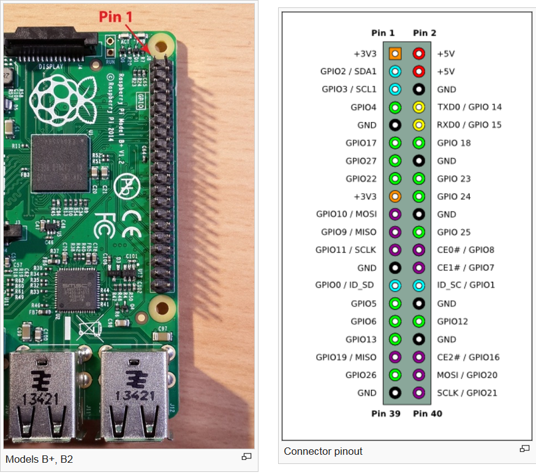
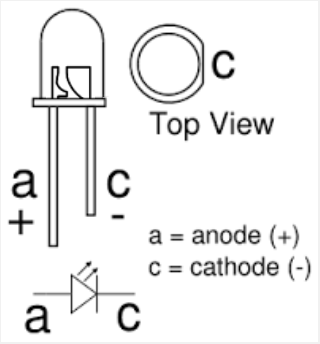
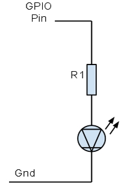

PYWS - The Raspberry Pi¶
Day eleven - June, 23
Introduction¶
The Raspberry Pi is a small single-board computer running a unix operation system. It supports a number of hardware intefaces like USB, Audio output, HDMI, Ethernet, Wireless, SD-card and many more. What’s interesting its a number of universal input-output ports, which can be used as all-purpose connectors to selfmade electronic devices. These connectors can act as input channels (switches, buttons, sensors) and output channels (leds, relais, motors). And these connectors can be controlled from a python script.
There is a lot to learn about the Raspberry Pi (RPi) and there are descriptions of many projects realized with the RPi. The best starting point is
Using Python with the Raspberry Pi¶
Accessing the hardware of any machine usually requires low level programming, like in C, but luckiy there is a python library available for the RPi, which gives us easy access to the available hardware connectors. The installation and the basic rules, how to program for the RPi are documented here:
The documentation about the Python-Interface is required to start with any experiments on the RPi, but it is not sufficient. We must learn some details about the electrical spicifications of the RPI hardware and we must recover some basic knowledge about electricity and a bit of electronics.
The most important detail to know is, that the connectors are connected directly to the processor chip of the RPi. There is no protection and no safety net. It is very easy to destroy the RPI hardware by connecting these pins in a wrong way. There are many wrong ways.
The second important detail to know ist the Connector Layout. This describes the 40 pins (28 for older models of the RPi) which are available to connect external elecronic circuits.
{kind=link}
The +3.3V connectors can deliver on a limited current of about 50 milliamperes (mA). The +5V connectors can deliver much more higher currents, but the GPIO pins can not accept any voltage above +3.5V. But 50 mA is enough for our experiments, as an LED usually only consumes 5-10 mA.
Only the pins named as GPIOnn are accessible with Python. The name of the pin indicates the BCM numbering scheme, which assigns the logical names in a chaotic way to the physical pins. There is however the BOARD numbering scheme, which directly uses the pin number. In the above image we can see the GPIO27 which is on pin 13. This pin has the BOARD address 13 and the BCM address 27. In all following example we use the BOARD adressing mode.
All GPIO pins can be used as input or as output connectors. The assignement of a pin as input or output must match the connected piece of electr(on)ic circuitry. Connecting an output pin to a switch may create a shortcut, which is one possibele way to destroy the RPi board.
For our experiments with the RPI we us only two types of external electronics: LEDs as output devices and push buttons as input devices. A push button has an open contact, which closes, when the butten is pressed and opens as soon as the button is released. This is different from a switch, which has two stable states: on/off.
Using a LED¶
An LED has two connectors, the anode and the cathode.
To switch on an LED, the cathode is connected to the ground, (-), the anode is connected to the 3.3V supply (+). The current must always be limited, so there is always a resistor serially connected (about 300 ohm).
Instead of the 3.3V supply, we can use one of the GPIO pins.
Using a push button¶
A button (or switch) is connected to an input connector. While the button is open, the input pin is free-floating, which means it does not indicate a reasonable value. Each input pin must therefor be pulled up or pulled down. This can be done with a resistor connection to 3.3V or ground. The next diagram shows the two alternate ways to connect a button:

The 1 kOhm resistor serves as a protection in case the GPIO pin is wrongly initiallized as an output connector.
When experimenting with the swtch, we wil find out, that sometimes the push or release of a switch returns more than one transition. This is the result of a physical effect named bouncing (like a ball bounces). On a time diagram this effect may look like this:

To avoid (reduce) this effect, a capacitor can be added to the circuit like this:

This should result in a much cleaner result:

Our sample hardware does not use debouncing capacitors, but we can use the GPIO software debouncing.
The Task: control traffic lights¶
Our sample circuit has the following configuration (BOARD numbering scheme)
Crossing one
car lights: red, yellow green - pins: 8, 10, 12 pedestrians: red, green - pins: 16, 18 push button pin: 19
Crossing two:
car lights: red, yellow green - pins: 3, 5, 7 pedestrians: red, green - pins: 11, 13 push button pin: 21
Starting condition: cars have green lights, pedestrians have red lights
When a pedestrian pushes the button, the lights shall go through the correct cycle to let the pedestrians pass, then the street is opened again for the cars.